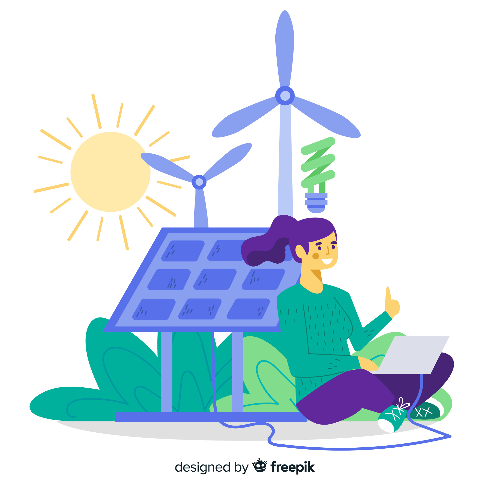

Welcome to EcoTrack
Your smart energy efficiency companion. Monitor, analyze, and optimize your energy consumption with AI-driven insights.
Getting Your Readings
1. Meter Read
↓
2. Dashboard
↓
3. Audit Report
↓
4. Smart Recommendations
↓
5. Saving Potential
Saving Energy is Cool
